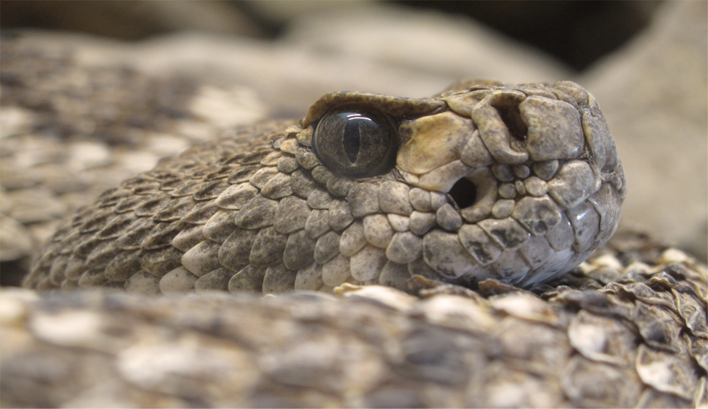

Resolving the Tree of Life
Phylogenetic trees are an integral component of comparative analyses that span topics ranging from the transmission of SARS-CoV-2 to human cancer biology to the factors that have shaped patterns of uneven species richness across the planet. Understanding the phylogeny of major groups of organisms has attracted the attention of evolutionary biologists since Charles Darwin drafted his famous “I think” diagram in 1837 (Barrett et al. 1987). However, it took more than 100 years for Darwin’s abstract concept of the tree of life to develop into an explicit, data-driven approach to phylogeny reconstruction.
The early twenty-first century represents a phylogenetic renaissance. Over the past 20 years, hundreds of researchers have contributed resolved molecular phylogenies at varying time scales across the diversity of life. We continue to this effort to resolve all branches of the Tree of Life thereby provide a comparative framework for biologists. However, there are numerous pitfalls along the way, and we also develop computational means to avoid these
Avoiding Pitfalls
We employ quantitative measures from phylogenetic informativeness (PI) theory to provide a predictive framework with which to assess the influence of noise on phylogenetic datasets. The aims of this work are two-fold
First, by creating a predictive framework for phylogenomic studies, markers or types of sequence data can be chosen objectively, saving investigator time and money by enabling cost-effective research design. Second, by scrutinizing existing datasets, sources of conflicting information can be revealed, leading to more stable inferences
These approaches are incorporated into computational pipelines used in most of our research efforts, and are available in the R package PhyInformR. We continue making these methods approachable and site-rates for our anlyses can now be estimated in IQTree
On the birth and death of genes
The decay of phylogenetic information and ability to predict where to expect sequence convergence is directly linked to the ability to detect sequence homologs. We are currently expanding theory aimed at assessing loss of phylogenetic information to the problem of ortholog detection. This addresses a major challenge at deep evolutionary time scales or for rapidly evolving loci. Our goal is to provide an immensely powerful framework for disentangling functional orthologs from genetic orthologs and assessing the roles of adaptation and gene birth/death events in the maintenance of genetic diversity
Current Research Projects
- Continue to resolve the ray-finned fish Tree of Life
- The role of compositional bias and taxon sampling
- Brachiobdellidan phylogenetics
- Ortholog detection and gene family phylogeny
- Experimental design for massive viral sequence datasets